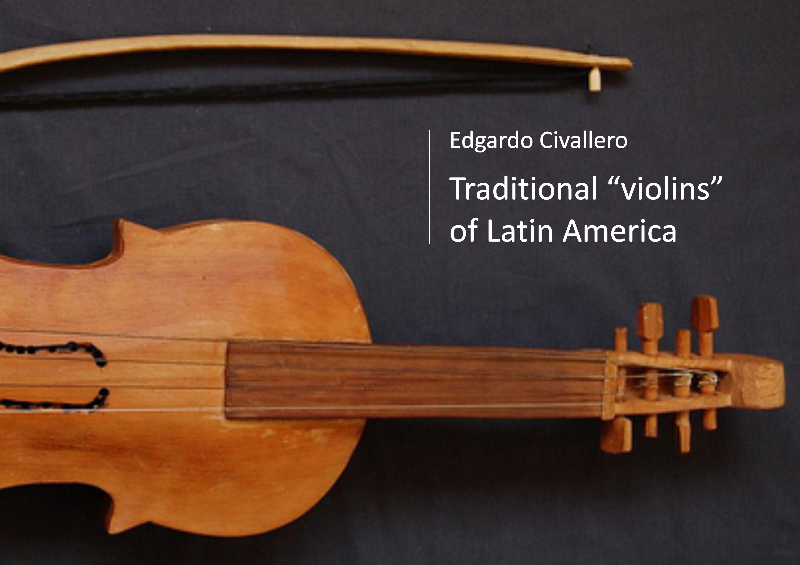

Traditional "violins" in Latin America. Part II
Home > Digital books on music. Series 1 > Traditional "violins" in Latin America. Part II
How to cite this work: Civallero, Edgardo (2025). Traditional "violins" in Latin America. Part II: Chile and Bolivia. Archive edition. Bogota: El Zorro de Abajo Editora.
First edition, 2025. Archive edition, 2025 (El Zorro de Abajo Editora).
Download in PDF.
This book explores the diversity of traditional bowed string instruments developed in Chile and Bolivia from models introduced into the Americas by Europeans from the sixteenth century onward. Violins, rabeles, bowed vihuelas, and related instruments provided a small number of basic structural and performance principles, but their descendants were transformed substantially in Latin American hands. Rural and Indigenous makers adapted them to locally available woods, cane, animal gut, horn, metal, resins, and other materials, while musicians altered their construction, tuning, playing techniques, repertories, and social functions. The result is not a collection of imperfect copies of European instruments, but a varied landscape of regional chordophones shaped by local musical cultures and aesthetic preferences.
The study begins in Chile, where both standard commercial violins and handcrafted local forms have long participated in traditional music. Rural makers have worked with woods such as alerce, coihue, ciruelillo, cypress, hazel, raulí, cedar, mañío, walnut, and canelo, producing instruments whose dimensions and proportions may differ noticeably from the European model. Particularly distinctive is the violín chilote of Chiloé, an island where Jesuit missionary activity introduced the violin during the seventeenth century and geographical isolation encouraged the development of local construction and performance traditions. The instrument became associated with dances such as the pericona, cielito, nave, and trastasera, and survives in the bandas de Cabildo that accompany religious processions with violins, guitars, accordions, transverse flutes, and percussion.
Alongside the violin, Chile developed an important tradition of rabel playing. Derived from the Iberian pastoral chordophone, the Chilean instrument was generally a three-string fiddle played upright with a horsehair bow, although historical sources document other forms, including a one-string instrument played by Mapuche musicians. Its principal area of circulation was central Chile, particularly the inland valleys and coastal ranges, where it accompanied rural songs and dances. Women used the rabel for dances and tonadas, while male performers combined it with the guitarrón in canto a lo poeta, including both verso a lo humano and verso a lo divino. After a period of decline during the twentieth century, the instrument has become the object of revival efforts by musicians, researchers, craftspeople, and cultural organizations.
In Bolivia, the diversity of traditional violins is considerably greater. In the southern department of Tarija, the violín chapaco is a locally made rural instrument whose size, form, materials, and tuning vary from one maker or performer to another. Cedar, chañar, arrayán, quina quina, cattle horn, cane, metal strings, and natural resins all enter into its construction. Traditionally embedded within Tarija's strict ritual calendar, the violin is associated particularly with the Easter season and is consequently also known as the violín pascuero. It accompanies zapateos, children's funerals, livestock-marking ceremonies, patron-saint festivals, sowing and harvest celebrations, as well as secular genres such as chacareras and cuecas. Nearby, the violín chaqueño of the Bolivian Chaco follows related principles while developing its own repertories and a highly recognizable performance style rich in glissando and portamento.
In the eastern lowlands, Indigenous communities transformed the violin still further. Among the Guarayo, Franciscan missionary influence produced several distinct varieties. One follows the European structural model and is used principally for church music. The yata miöri, by contrast, is made from a single section of takuara cane forming body, neck, and pegbox, while the takuar miöri combines a cane resonator with a separately constructed wooden neck. Earlier instruments used strings made from peccary or monkey gut, locally carved bridges and pegs, wooden or palm bows, horsehair, and plant resins. These inexpensive cane violins also served as learning instruments and were once heard during Carnival, wakes, funeral processions, All Saints' observances, harvests, and communal work.
The Chiquitano and Mojeño peoples preserve another important strand of the Bolivian violin tradition. Their instruments emerged within the Jesuit missions of Chiquitanía and Moxos, where missionaries taught Indigenous musicians both performance and instrument making. Locally built from woods such as cedar, mara, and tajibo, these violins often retain structural details associated with earlier European forms, including relatively short necks and outward-curving bows. Among the Mojeño, the instrument remains strongly connected to church services, processions, vigils, and the Ichapekene Piesta of San Ignacio de Moxos. Among the Chiquitano it accompanies funerals, Holy Week observances, Carnival music, and the celebrated Baroque orchestral traditions that survived the disappearance of the missions themselves.
Other Indigenous societies incorporated the violin through later missionary encounters. The Mosetén seke'nakdye', traditionally made from cedar or forest woods with little more than a machete, may use natural adhesives, animal-gut strings, and bows strung with horsehair or cotton fibres coated with incense resin. Introduced by Franciscans during the eighteenth century, it became associated with church music but also entered domestic rituals, shamanic contexts, drinking gatherings, and secular song. The Cavineño likewise inherited a violin tradition from the missions, although its contemporary condition is poorly documented.
The survey concludes in the Andean valleys and highlands, where additional local forms demonstrate the continuing flexibility of the instrument. In the Chichas region of Potosí, the violín chicheño is a small, roughly finished three-string instrument, traditionally fitted with sheep-gut strings and an unusual tuning. Played particularly between Easter and the Feast of Saint Peter and during livestock-marking celebrations, it accompanies tonadas, takipayanaku, and tukuchas, often together with the rustic guitarra chicheña. Farther east, musicians around Vallegrande make the violín vallegrandino, whose body is hollowed from a single block of cedar and whose distinctive bridge incorporates a piece of bone.
Taken together, these instruments reveal the violin not as a fixed European artifact transplanted intact into Latin America, but as a remarkably adaptable technological principle. Across Chilean islands and central valleys, Tarijeño villages, the Chaco, Jesuit and Franciscan mission territories, Amazonian lowlands, and Andean highlands, musicians and makers repeatedly reconstructed the bowed chordophone according to their own materials, sonic preferences, ritual calendars, repertories, and social worlds. The history of the traditional Latin American violin is therefore also a history of local craftsmanship and musical appropriation: a familiar form continually dismantled, rebuilt, and made to sound differently.